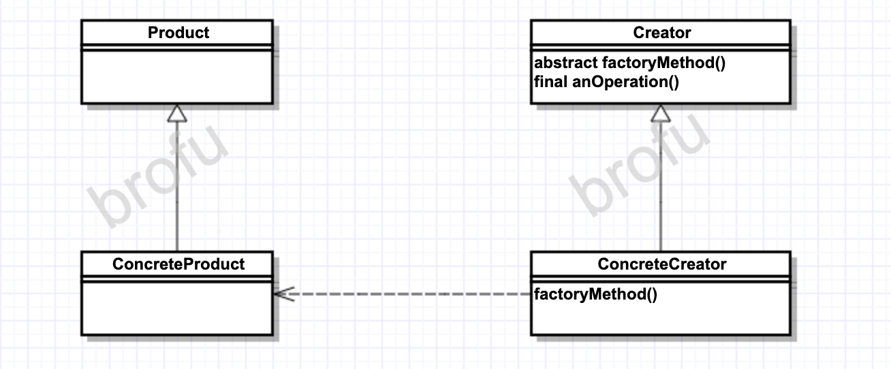

Definition
Factory Method Pattern 定义了一个创建对象的接口，由子类决定要实例化的类是哪一个。工厂方法让类把实例化推迟到子类
UML Graph

OO原则
- 要依赖抽象，不要依赖具体类
- 依赖倒置原则。Dependency Inversion Principle
- 不能让高层组件依赖低层组件，相反，不管高层或者低层组件，都应该依赖于抽象
- 高层组件是指由其他低层组件定义/影响其行为的类。比如，
PizzaStoreis affected byPizza - Factory Method Pattern let both
PizzaStoreandConcretePizzadependabstrct Pizza - 几个方法
- 变量不可以持有具体类的引用 （比如，使用new, 就会持有具体类的引用。可以通过工厂来避免这样的做法）
- 不要让类派生自具体类。相反，派生自一个抽象（抽象类或者接口）
- 不要覆盖基类中已经实现的方法。如果覆盖基类已经实现的方法，那么基类就不是一个真正适合被继承的抽象。基类中已经实现的方法，应该由所有的子类共享？
Thinkings
- Factory Method Pattern让子类决定该创建的对象是什么，封装对象的创建过程
- 让子类决定要实例化的类是哪一个，并不是指允许子类本身在运行时做决定，而是指在编写创建者类的时候，并不需要知道实际创建的产品是哪一个。选择了使用哪个子类，自然就确定了实际创建的产品是什么
- 和Simple Factory的区别
- Factory Patterns的优点：
- 将创建对象的代码集中在一个对象或者方法中，避免重复，便于维护
- 客户端在操作对象时，只能依赖于接口，而不是具体类